Watch how the cyan gradient orbs gently drift and breathe in the background behind this text, while the scanlines glide across the screen. Notice zero frame drop when scrolling.
Simulating volatile financial instruments and corporate restructuring under crisis conditions.
Crisis resolution matrix evaluating supply chain fragility and currency hyperinflation.
High-stakes equity negotiations and capital table defenses against hostile takeovers.